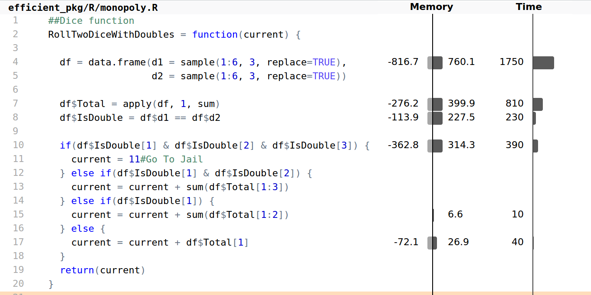

8 Efficient performance
Donald Knuth is a famous American computer scientist who developed a number of the key alogorithms that we use today. On the subject of optimisation he give this advice.
The real problem is that programmers have spent far too much time worrying about efficiency in the wrong places and at the wrong times; premature optimization is the root of all evil (or at least most of it) in programming.
That’s why in the previous chapters we’ve focused on tools and your working environment to increase efficiency. These are (relatively) easy ways of saving time, that once implemented, work for future projects. In this chapter we are going to consider code optimisation. Simply stated, making your program run faster.
In many scernios, code is running slowly due to a couple of key bottlenecks. By specifically targetting these key areas, we may be able to speed up the entire program.
In this chapter we will consider a variety of code tweaks that can eke out an extra speed boost. We’ll begin with general hints and tips about using base R. Then look at code profiling to determine where our efforts should be focused. We conclude by looking at Rcpp, an efficient way of incorparting C++ code into an R analysis.
8.1 Top 5 tips for efficient performance
- Before you start to optimise you code, ensure you know where the bottleneck lies; use a code profiler.
- The
ifelsefunction is optimal for vectorised comparisons. - If the data in your data frame is all of the same type, consider converting it to a matrix for a speed boost.
- The parallel package is ideal for Monte-Carlo simulations.
- For optimal performance, consider re-writing key parts of your code in C++.
8.2 Efficient base R
In R there is often more than one way to solve a problem. In this section we highlight standard tricks or alternative methods that may improve performance.
The if vs ifelse functions
The ifelse function
ifelse(test, yes, no)is a vectorised version of the standard control-flow if function. The return value of ifelse is filled with elements from the yes and no arguments that are determined by whether the element of test is TRUE or FALSE.
If the length of test is equal to \(1\), i.e. length(test) == 1, then the standard if(test) yes else no is more efficient.
Sorting and ordering
Sorting a vector a single vector is relatively quick; sorting a vector of length \(10^7\) takes around \(0.01\) seconds. If you only sort a vector once at the top of a script, then don’t worry too much about this. However if you are sorting inside a loop, or in a shiny application, then it can be worthwhile thinking about how to optimise this operation.
There are currently three sorting algorithms, c("shell", "quick", "radix") that can be specified in the sort function; with radix being a new addition to R 3.3. Typically the radix (the non-default option) is optimal for most situations.
Another useful trick is to partially order the results. For example, if you only want to display the top ten results, then use the partial argument, i.e. sort(x, partial=1:10).
Reversing elements
The rev function provides a reversed version of its argument. If you wish to sort in increasing order, then use the more efficient sort(x, decreasing=TRUE) instead of rev(sort(x)).
Which indices are TRUE
To determine which index of a vector or array are TRUE, we would typically use the which function. If we want to find the index of just the minimum or maximum value, i.e. which(x == min(x)) then use the more efficient which.min/which.max variants.
Converting factors to numerics
A factor is just a vector of integers with associated levels. Occasionally we want to convert a factor into its numerical equivalent. The most efficient way of doing this (especially for long factors) is
as.numeric(levels(f))[f]where f is the factor.
String concatenation
To concatenate strings use the paste function
paste("A", "B")The separation character is specified via the sep argument. The function paste0(..., collapse) is equivalent to paste(..., sep = "", collapse), but is slightly more efficient.
Logical AND and OR
The logical AND (&) and OR (|) operators are vectorised functions and are typically used whenever we perform subsetting operations. For example
x < 0.4 | x > 0.6
#> [1] TRUE FALSE TRUEWhen R executes the above comparison, it will always calculate x > 0.6 regardless of the value of x < 0.4. In contrast, the non-vectorised version, &&, only executes the second component if needed. This is efficient and leads to more neater code, e.g.
# read.csv is only executed if the file exists
file.exists("data.csv") && read.csv("data.csv")
#> [1] FALSEHowever care must be taken not to use && or || on vectors since it will give the incorrect answer
x < 0.4 || x > 0.6
#> [1] TRUERow and column operations
In data analysis we often want to apply a function to each column or row of a data set. For example, we might want to calculation the column or row sums. The apply function makes this type of operation straightforward.
# Second argument: 1 -> rows. 2 -> columns
apply(data_set, 1, function_name)There are optimised functions for calculating row and columns sums/means, rowSums, colSums, rowMeans and colMeans that should be used whenever possible.
is.na and anyNA
To test whether a vector (or other obeject) contains missing values we use the is.na function. Often we are interested in whether a vector contains any missing values. In this case, anyNA(x) is usually more efficient than any(is.na(x)).
Matrices
A matrix is similar to a data frame: it is a two dimensional object and sub-setting and other functions work in the expected way. However all matrix elements must have the same type. Matrices tend to be used during statistical calculations. Calculating the line of best fit using the lm() function, internally converts the data to a matrix before calculating the results; any characters are thus recoded as numeric dummy variables.
Matrices are generally faster than data frames. For example, the datasets ex_mat and ex_df from the efficient package each have \(1000\) rows and \(100\) columns and contain the same random numbers. However selecting rows from a data frame is around \(150\) times slower than a matrix.
data(ex_mat, ex_df, package="efficient")
microbenchmark(times=100, unit="ms", ex_mat[1,], ex_df[1,])
#> Unit: milliseconds
#> expr min lq mean median uq max neval
#> ex_mat[1, ] 0.0022 0.0033 0.0514 0.00599 0.00671 4.61 100
#> ex_df[1, ] 0.7360 0.8149 1.0465 0.86335 1.14765 5.61 100
Use the data.matrix function to efficiently convert a data frame into a matrix.
The integer data type
Numbers in R are usually stored in double-precision floating-point format - see Braun and Murdoch (2007) and Goldberg (1991). The term ‘double’ refers to the fact that on \(32\) bit systems (for which the format was developed) two memory locations are used to store a single number. Each double-precision number is accurate to around \(17\) decimal places.
When comparing floating point numbers we should be particularly careful, since y = sqrt(2)*sqrt(2) is not exactly 2, instead it’s almost 2. Using sprintf(“%.17f”, y) will give you the true value of y (to 17 decimal places).
There is also another data type, called an integer. Integers primarily exist to be passed to C or Fortran code. Typically we don’t worry about creating integers, however they are occasionally used to optimise sub-setting operations. When we subset a data frame or matrix, we are interacting with C code. For example, if we look at the arguments for the head function
args(head.matrix)
#> function (x, n = 6L, ...)
#> NULL
Using the : operator automatically creates a vector of integers.
The default argument for n is 6L (the L is short for Literal and is used to create an integer). Since this function is being called by almost everyone that uses R, this low level optimisation is useful. To illustrate the speed increase, suppose we are selecting the first \(100\) rows from a data frame (clock_speed, from the efficient package). The speed increase is illustrated below, using the microbenchmark package:
s_int = 1:100; s_double = seq(1, 100, 1.0)
microbenchmark(clock_speed[s_int, 2L], clock_speed[s_double, 2.0], times=1000000)
#> Unit: microseconds
#> expr min lq mean median uq max neval cld
#> clock_speed[s_int, 2L] 11.79 13.43 15.30 13.81 14.22 87979 1e+06 a
#> clock_speed[s_double, 2] 12.79 14.37 16.04 14.76 15.18 21964 1e+06 bThe above result shows that using integers is slightly faster, but probably not worth worrying about.
Integers are more space efficient. If we compare size of a integer vector to a standard numeric vector
pryr::object_size(1:10000)
#> 40 kB
pryr::object_size(y = seq(1, 10000, by=1.0))
#> 80 kBThe integer version is (approximately) half the size. However most mathematical operations will convert the integer vector into a standard numerical vector, e.g.
is.integer(1L + 1)
#> [1] FALSESparse matrices
Another efficient data structure is a sparse matrix. This is simply a matrix where most of the elements are zero. Conversely, if most elements are non-zero, the matrix is considered dense. The proportion of non-zero elements is called the sparsity. Large sparse matrices often crop up when performing numerical calculations. Typically, our data isn’t sparse but the resulting data structures we create may be sparse. There are a number of techniques/methods used to store sparse matrices. Methods for creating sparse matrices can be found in the Matrix package19.
As an example, suppose we have a large matrix where the diagonial elements are non-zero
library("Matrix")
N = 10000
sp = sparseMatrix(1:N, 1:N, x = 1)
m = diag(1, N, N)Both objects contain the same information, but the data is stored differently. The matrix object stores each individual element, while the sparse matrix object only stores the location of the non-zero elements. This is much more memory efficient
pryr::object_size(sp)
#> 161 kB
pryr::object_size(m)
#> 800 MBExercises
Create a vector
x. Benchmarkany(is.na(x))againstanyNA. Do the results vary with the size of the vector.- Examine the following function definitions to give you an idea of how integers are used.
tail.matrixlm.
Contruct a matrix of integers and a matrix of numerics. Using
pryr::object_size, compare the objects.How does the function
seq.int, which was used in thetail.matrixfunction, differ to the standardseqfunction?
A related memory saving idea is to replace logical vectors with vectors from the bit package which take up just over 16th of the space (but you can’t use NAs).
8.3 Code profiling
A circumstance that happens all too often, is that we simply want our code to run faster. In some cases it’s obvious where the bottle neck lies. Other times we have to rely on our intuition. One major drawback of relying on our intuition is that we could be wrong and we end up pointlessly optimising the wrong piece of code. To make slow code run faster, we first need to determine where the slow code lives.
The Rprof function is built-in tool for profiling the execution of R expressions. At regular time intervals, the profiler stops the R interpreter, records the current function call stack, and saves the information to a file. The results from Rprof are stochastic. Each time we run a function R, the conditions have changed. Hence, each time you profile your code, the result will be slightly different.
Unfortunately Rprof is not user friendly. The profvis package provides an interactive graphical interface for visualising data data from Rprof.
8.3.1 Getting started with profvis
The profvis package can be installed in the usual way
install.packages("profvis")As a simple example, we will use the movies data set, which contain information on around 60,000 movies from the IMDB. First, we’ll select movies that are classed as comedies, then plot year vs movies rating, and draw a local polynomial regression line to pick out the trend. The main function from the profvis package, is profvis which profiles the code and creates an interactive HTML page. The first argument of profvis is the R expression of interest.
library("profvis")
profvis({
data(movies, package="ggplot2movies") # Load data
movies = movies[movies$Comedy==1, ]
plot(movies$year, movies$rating)
model = loess(rating ~ year, data=movies) # loess regression line
j = order(movies$year)
lines(movies$year[j], model$fitted[j]) # Add line to the plot
})
Figure 8.1: Output from profvis
The left hand panel gives the amount of time spent on each line of code. We see that majority of time is spent calculating the loess smoothing line. The bottom line of the right panel also highlights that most of the execution time is spent on the loess function. Travelling up the function, we see that loess calls simpleLoess which in turn calls .C function.
The conclusion from this graph is that if optimisation were required, it would make sense to focus on the loess and possibly the order function calls.
8.3.2 Example: Monopoly Simulation
Monopoly is a board game that originated in the United States over \(100\) years ago. The object of the game is to go round the board and purchase squares (properties). If other players land on your properties they have to pay a tax. The player with the most money at the end of the game, wins. To make things more interesting, there are Chance and Community Chest squares. If you land on one of these squares, you draw card, which may send to you to other parts of the board. The other special square, is Jail. One way of entering Jail is to roll three successive doubles.
The efficient package contains a Monte-Carlo function for simulating a simplified game of monopoly. By keeping track of where a person lands when going round the board, we obtain an estimate of the probability of landing on a certain square. The entire code is around 100 lines long. In order for profvis to fully profile the code, the efficient package needs to be installed from source
# args is also a valid argument for install.packages
devtools::install_github("csgillespie/efficient_pkg", args="--with-keep.source")The function can then be profiled via
library("efficient")
profvis(SimulateMonopoly(10000))to get

The output from profvis shows that the vast majority of time is spent in the move function. In Monopoly rolling a double (a pair of 1’s, 2’s, …, 6’s) is special:
- Roll two dice (
total1):total_score = total1; - If you get a double, roll again (
total2) andtotal_score = total1 + total2; - If you get a double, roll again (
total3) andtotal_score = total1 + total2 + total3; - If roll three is a double, Go To Jail, otherwise move
total_score.
The move function spends around 50% of the time creating a data frame, 25% time calculating row sums, and the remainder on a comparison operations. This piece of code can be optimised fairly easily (will still retaining the same overall structure) by incorporating the following improvements20:
- Use a matrix instead of a data frame;
- Sample \(6\) numbers at once, instead of two groups of three;
- Switch from
applytorowSums; - Use
&&in theifcondition.
Implementing this features, results in the following code.
move = function(current) {
# data.frame -> matrix
rolls = matrix(sample(1:6, 6, replace=TRUE), ncol=2)
Total = rowSums(rolls) # apply -> rowSums
IsDouble = rolls[,1] == rolls[,2]
# & -> &&
if(IsDouble[1] && IsDouble[2] && IsDouble[3]) {
current = 11#Go To Jail
} else if(IsDouble[1] && IsDouble[2]) {
current = current + sum(Total[1:3])
} else if(IsDouble[1]) {
current = current + Total[1:2]
} else {
current = Total[1]
}
current
}which gives a 25-fold speed improvement.
Exercise
The move function above uses a vectorised solution. Whenever we move, we always roll six dice, then examine the outcome and determine the number of doubles. However, this is potentially wasteful, since the probability of getting one double is \(1/6\) and two doubles is \(1/36\). Another method is too only roll additional dice if and when they are needed. Implement and time this solution.
8.4 Parallel computing
This chapter provides a brief foray into the word of parallel computing and only looks at shared memory systems. The idea is to give a flavour of what is possible, instead of covering all possible varities. For a fuller account, see McCallum and Weston (2011).
In recent R versions (since R 2.14.0) the parallel package comes pre-installed with base R. The parallel package must still be loaded before use however, and you must determine the number of available cores manually, as illustrated below.
library("parallel")
no_of_cores = detectCores()8.4.1 Parallel versions of apply functions
The most commonly used parallel applications are parallelised replacements of lapply, sapply and apply. The parallel implementations and their arguments are shown below.
parLapply(cl, x, FUN, ...)
parApply(cl = NULL, X, MARGIN, FUN, ...)
parSapply(cl = NULL, X, FUN, ..., simplify = TRUE, USE.NAMES = TRUE) The key point is that there is very little difference in arguments between parLapply and apply, so the barrier to using (this form) of parallel computing is low. Each function above has an argument cl, which is created by a makeCluster call. This function, amongst other things, specifies the number of processors to use.
8.4.2 Example: Snakes and Ladders
Parallel computing is ideal for Monte-Carlo simulations. Each core independently simulates a realisation from model. At the end, we gather up the results. In the efficient package, there is a function that simulates a single game of Snakes and Ladders - snakes_ladders()21
If we wanted to simulate N games we could use sapply
N = 10^4
sapply(1:N, snakes_ladders)Rewriting this code to make use of the parallel package is straightforward. We begin by making a cluster object
library("parallel")
cl = makeCluster(4)Then swap sapply for parSapply
parSapply(cl, 1:N, snakes_ladders)before stopping the cluster
stopCluster(cl)On my computer I get a four-fold speed-up.
8.4.3 Exit functions with care
We should always call stopCluster to free resources when we are finished with the cluster object. However if the parallel code is within function, it’s possible that function ends as the results of an error and so stopCluster is ommitted.
The on.exit function handles this problem with the minimum of fuss; regardless how the function ends, on.exit is always called. In the context of parallel programming we will have something similar to
simulate = function(cores) {
cl = makeCluster(cores)
on.exit(stopCluster(cl))
# Do something
}
Another common use of on.exit is with the par function. If you use par to change graphical parameters within a function, on.exit ensures these parameters are reset to their previous value when the function ends.
8.4.4 Process forking
Another way of running code in parallel is to use the mclapply and mcmapply functions, i.e.
# This will run on Windows, but will only use 1 core
mclapply(1:2, snakes_ladders)These functions use forking, that is creating a new copy of a process running on the CPU. However Windows does not support this low-level functionality in the way that Linux does. If I’m writing code that I don’t intend to share, I use mclapply since it is more efficient.
8.5 Rcpp
Sometimes R is just slow. You’ve tried every trick you know, and your code is still crawling along. At this point you could consider rewriting key parts of your code in another, faster language. R has interfaces to other languages via packages, such as Rcpp, rJava, rPython and recently V8. These provide R interfaces to C++, Java, Python and JavaScript respectively. Rcpp is the most popular of these (Figure 8.2).

Figure 8.2: Downloads per day from the RStudio CRAN mirror of packages that provide R interfaces to other languages.
C++ is a modern, fast and very well-supported language with libraries for performing many kinds of computational task. Rcpp makes incorporating C++ code into your R workflow easily.
Although C/Fortran routines can be used using the .Call function this is not recommended: using .Call can be a painful experience. Rcpp provides a friendly API (Application Program Interface) that lets you write high-performance code, bypassing R’s tricky C API. Typical bottlenecks that C++ addresses are loops and recursive functions.
C++ is a powerful programming language about which entire books have been written. This section therefore is focussed on getting started and provide a flavour of what is possible. It is structured as follows. After ensuring that your computer is set-up for Rcpp in Section 8.5.1, we proceed by creating a simple C++ function, to show how C++ compares with R (Section 8.5.2). This is converted into an R function using cppFunction() in Section 8.5.3. The remainder of the chapter explains C++ data types (Section 8.5.4), illustrates how to source C++ code directly (Section 8.5.5) and explains vectors (Section 8.5.6) Rcpp sugar (Section 8.5.7) and finally provides guidance on further resources on the subject (Section 8.5.8).
8.5.1 Pre-requisites
To write and compile C++ functions, you need a working C++ compiler. The installation method depends on your operating system:
- Linux: A compiler should already be installed. Otherwise, install
r-baseand a compiler will be installed as a dependency. - Macs: Install
Xcode. - Windows: Install Rtools. Make sure you select the version that corresponds to your version of R.
The code in this chapter was generated using version 0.12.5 of Rcpp. The latest version can be installed from CRAN:
install.packages("Rcpp")Rcpp is well documented, as illustrated by the number of vignettes on the package’s CRAN page. In addition to its popularity, many other packages depend on Rcpp, which can be seen by looking at the Reverse Imports section.
To check that you have everything needed for this chapter, run the following piece of code from the course R package:
efficient::test_rcpp()
#> Everything seems fine8.5.2 A simple C++ function
A C++ function is similar to an R function: you pass a set of inputs to function, some code is run, a single object is returned. However there are some key differences.
- In the C++ function each line must be terminated with
;In R, we use;only when we have multiple statements on the same line. - We must declare object types in the C++ version. In particular we need to declare the types of the function arguments, return value and any intermediate objects we create.
- The function must have an explicit
returnstatement. Similar to R, there can be multiple returns, but the function will terminate when it hits it’s firstreturnstatement. - You do not use assignment when creating a function.
- Object assignment must use
=sign. The<-operator isn’t valid. - One line comments can be created using
//. Multi-line comments are created using/*...*/
Suppose we want to create a function that adds two numbers together. In R this would be a simple one line affair:
add_r = function(x, y) x + yIn C++ it is a bit more long winded
/* Return type double
* Two arguments, also doubles
*/
double add_c(double x, double y) {
double value = x + y;
return value;
}If we were writing a C++ programme we would also need another function called main. We would then compile the code to obtain an executable. The executable is platform dependent. The beauty of using Rcpp is that it makes it very easy to call C++ functions from R and the user doesn’t have to worry about the platform, or compilers or the R/C++ interface.
8.5.3 The cppFunction command
Load the Rcpp package using the usual library function call:
library("Rcpp") Pass the C++ function created in the previous section as a text string argument to cppFunction:
cppFunction('
double add_c(double x, double y) {
double value = x + y;
return value;
}
')Rcpp will magically compile the C++ code and construct a function that bridges the gap between R and C++. After running the above code, we now have access to the add_c function
add_c
#> function (x, y)
#> .Primitive(".Call")(<pointer: 0x2acf85eba8a0>, x, y)and can call the add_c function in the usual way
add_c(1, 2)
#> [1] 3We don’t have to worry about compilers. Also, if you include this function in a package, users don’t have to worry about any of the Rcpp magic. It just works.
8.5.4 C++ data types
The most basic type of variable is an integer, int. An int variable can store a value in the range \(-32768\) to \(+32767\). To store floating point numbers, there are single precision numbers, float and double precision numbers, double. A double takes twice as much memory as a float. For single characters, we use the char data type.
There is also something called an unsigned int, which goes from 0 to 65, 535 and a long int that ranges from 0 to 231 − 1.
| Type | Description |
|---|---|
| char | A single character. |
| int | An integer. |
| float | A single precision floating point number. |
| double | A double-precision floating point number. |
| void | A valueless quantity. |
A pointer object is a variable that points to an area of memory that has been given a name. Pointers are a very powerful, but primitive facility contained in the C++ language. They are very useful since rather than passing large objects around, we pass a pointer to the memory location; rather than pass the house, we just give the address. We won’t use pointers in this chapter, but mention them for completeness. Table @ref{tab:cpptypes} gives an overview.
8.5.5 The sourceCpp function
The cppFunction is great for getting small examples up and running. But it is better practice to put your C++ code in a separate file (with file extension cpp) and use the function call sourceCpp("path/to/file.cpp") to compile them. However we need to include a few headers at the top of the file. The first line we add gives us access to the Rcpp functions. The file Rcpp.h contains a list of function and class definitions supplied by Rcpp. This file will be located where Rcpp is installed. The include line
#include <Rcpp.h>causes the compiler to replace that lines with the contents of the named source file. This means that we can access the functions defined by Rcpp. To access the Rcpp functions we would have to type Rcpp::function_1. To avoid typing Rcpp::, we use the namespace facility
using namespace Rcpp;Now we can just type function_1; this is the same concept that R uses for managing function name collisions when loading packages. Above each function we want to export/use in R, we add the tag
// [[Rcpp::export]]This would give the complete file
#include <Rcpp.h>
using namespace Rcpp;
// [[Rcpp::export]]
double add_c(double x, double y) {
double value = x + y;
return value;
}There are two main benefits with putting your C++ functions in separate files. First, we have the benefit of syntax highlighting (RStudio has great support for C++ editing). Second, it’s easier to make syntax errors when the switching between R and C++ in the same file. To save space we we’ll omit the headers for the remainder of the chapter.
8.5.6 Vectors and loops
Let’s now consider a slightly more complicated example. Here we want to write our own function that calculates the mean. This is just an illustrative example: R’s version is much better and more robust to scale differences in our data. For comparison, let’s create a corresponding R function - this is the same function we used in chapter 3. The function takes a single vector x as input, and returns the mean value, m:
mean_r = function(x) {
m = 0
n = length(x)
for(i in 1:n)
m = m + x[i]/n
m
}This is a very bad R function; we should just use the base function mean for real world applications. However the purpose of mean_r is to provide a comparison for the C++ version, which we will write in a similar way.
In this example, we will let Rcpp smooth the interface between C++ and R by using the NumericVector data type. This Rcpp data type mirrors the R vector object type. Other common classes are: IntegerVector, CharacterVector, and LogicalVector.
In the C++ version of the mean function, we specify the arguments types: x (NumericVector) and the return value (double). The C++ version of the mean function is a few lines longer. Almost always, the corresponding C++ version will be, possibly much, longer.
double mean_c(NumericVector x) {
int i;
int n = x.size();
double mean = 0;
for(i=0; i<n; i++) {
mean = mean + x[i]/n;
}
return mean;
}To use the C++ function we need to source the file (remember to put the necessary headers in).
sourceCpp("src/mean_c.cpp")Although the C++ version is similar, there are a few crucial differences.
- We use the
.size()method to find the length ofx. The
forloop has a more complicated syntax.for (variable initialization; condition; variable update ) { // Code to execute }C++ provides operators to modify variables in place. So
i++increases the value ofiby1. Similarly, we could rewrite part of the loop asThe above code addsmean += x[i]/n;x[i]/nto the value ofmean. Other similar operators are-=,*=,/=andi--.A C++ vector starts at
0not1
To compare the C++ and R functions, we’ll generate some normal random numbers for the comparison
x = rnorm(1e4)Then call the microbenchmark function (results plotted in figure 8.3).
# com_mean_r is the compiled version of mean_r
z = microbenchmark(
mean(x), mean_r(x), com_mean_r(x), mean_c(x),
times=1000
)In this simple example, the Rcpp variant is around \(100\) times faster than the corresponding R version. This sort of speed-up is not uncommon when switching to an Rcpp solution.

Figure 8.3: Comparison of mean functions.
Exercises
Consider the following piece of code
double test1() {
double a = 1.0 / 81;
double b = 0;
for (int i = 0; i < 729; ++ i)
b = b + a;
return b;
}- Save the function
test1in a separate file. Make sure it works. - Write a similar function in R and compare the speed of the C++ and R versions.
- Create a function called
test2where thedoublevariables have been replaced byfloat. Do you still get the correct answer? - Change
b = b + atob += ato make you code moreClike. - (Hard) What’s the difference between
i++and++i?
Matrices
Each vector type has a corresponding matrix equivalent: NumericMatrix, IntegerMatrix, CharacterMatrix and LogicalMatrix. We use these types in a similar way to how we used NumericVector’s. The main differences are:
When we initialise, we need specify the number of rows and columns
// 10 rows, 5 columns NumericMatrix mat(10, 5); // Length 10 NumericVector v(10);- We subset using
(), i.e.mat(5, 4). - The first view in a matrix is
mat(0, 0)- remember indexes start with0. To determine the number of rows and columns, we use the
.nrow()and.ncol()methods.
8.5.7 C++ with sugar on top
Rcpp sugar brings a higher-level of abstraction to C++ code written using the Rcpp API. What this means in practice is that we can write C++ code in the style of R. For example, suppose we wanted to find the squared difference of two vectors; a squared residual in regression. In R we would use
sq_diff_r = function(x, y) (x - y)^2Rewriting the function in standard C++ would give
NumericVector res_c(NumericVector x, NumericVector y) {
int i;
int n = x.size();
NumericVector residuals(n);
for(i=0; i<n; i++) {
residuals[i] = pow(x[i] - y[i], 2);
}
return residuals;
}With Rcpp sugar we can rewrite this code to be more succinct and have more of an R feel:
NumericVector res_sugar(NumericVector x, NumericVector y) {
return pow(x-y, 2);
}In the above C++ code, the pow function and x-y are valid due to Rcpp sugar. Other functions that are available include the d/q/p/r statistical functions, such as rnorm and pnorm. The sweetened versions aren’t usually faster than the C++ version, but typically there’s very little difference between the two. However with the sugared variety, the code is shorter and is constantly being improved.
Exercises
- Construct an R version,
res_rand compare the three function variants. - In the above example,
res_sugaris faster thanres_c. Do you know why?
8.5.8 Rcpp resources
The aim of this section was to provide an introduction to Rcpp. One of the selling features of Rcpp is that there is a great deal of documentation available.
- The Rcpp website;
- The original Journal of Statistical Software paper describing
Rcppand the follow-up book (Eddelbuettel and François 2011; Eddelbuettel 2013); - H. Wickham (2014a) provides a very readable chapter on
Rcppthat goes into a bit more detail than this section; - The
Rcppsection on the stackoverflow website. Questions are often answered by theRcppauthors.
References
Braun, John, and Duncan J Murdoch. 2007. A First Course in Statistical Programming with R. Vol. 25. Cambridge University Press Cambridge.
Goldberg, David. 1991. “What Every Computer Scientist Should Know About Floating-Point Arithmetic.” ACM Computing Surveys (CSUR) 23 (1). ACM: 5–48.
McCallum, Ethan, and Stephen Weston. 2011. Parallel R. O’Reilly Media.
Eddelbuettel, Dirk, and Romain François. 2011. “Rcpp: Seamless R and C++ Integration.” Journal of Statistical Software 40 (8): 1–18.
Eddelbuettel, Dirk. 2013. Seamless R and C++ Integration with Rcpp. Springer.
Wickham, Hadley. 2014a. Advanced R. CRC Press.